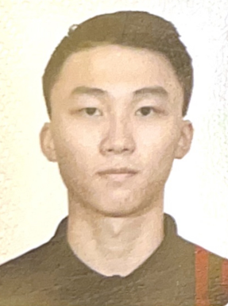

Yuyang "K" Li

Birth Date: January 20, 2001
Gender: Male
Education
Bachelor of Science in Computer Science
Relevant Coursework: Java, Python, C++, JavaScript, Algorithms, Data Structures
Strong foundation in logic and mathematics, with a quick learning ability.
Skills
Programming Languages: Java, Python, C++, JavaScriptTechnical Skills: Problem-solving, software development, algorithms, data structures, logic, and math proficiencySoft Skills: Quick learner, teamwork, communication, strategic thinking
Interests
Deep passion for gaming and esports, particularly in Riot Games' ecosystem. Enthusiast of game development, game design, and creating immersive player experiences.
Video
VIDEO